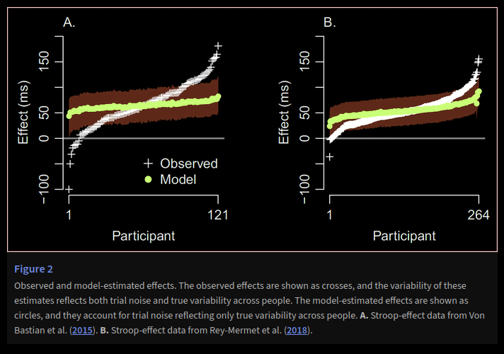
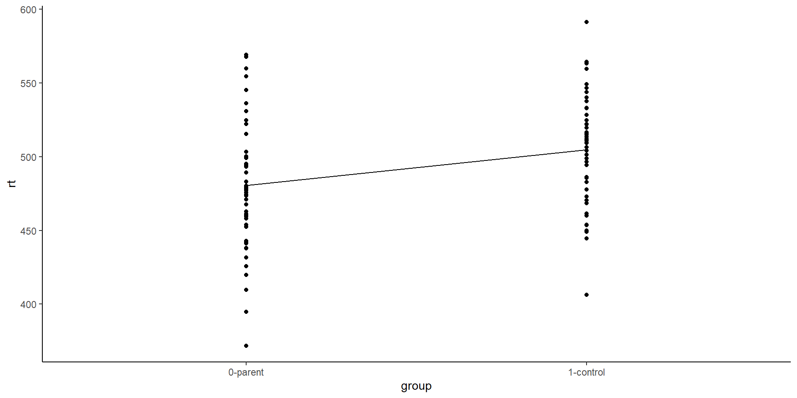

flowchart RL
aC(("d")) --> X1
bC(("d")) --> X2
cC(("d")) --> X3
dC(("d")) --> X4
eC(("d")) --> X5
X1 & X2 & X3 & X4 & X5 --> C(("life satisfaction"))
Statistical Models
Lecture 1 - Introduction
Today’s Outline
- Why Models
- Why Regression
- This module
The whole picture
- From Day 1 to now and beyond…
Data Skills \(\Rightarrow\) Analysis \(\Rightarrow\) Psychometrics \(\Rightarrow\) Models \(\Rightarrow\) Advanced Options
- Start off with data skills (L1), working through some standard analytical approaches (L2), looked at scale development (L3 Sem 1), now statistical models (L3 Sem 2), with some more advanced options still to come (L4)
Stat models: An overview course
Standing on top of everything and looking down, seeing all your different options and how to implement them
* Focus is on breadth rather than depth … except correlation & regression, which provide the foundation for most advanced techniques
Aim: basic understanding of statistical models and the skills of how to implement them in R
- quite a practical module; reflected in the assignments
Part 1: Why models?
Why statistical models?
- A statistical model is a simplification and idealization of reality that captures our key assumptions about how the data came about (the data generating process or DGP).
- A statistical model is a “theory” about data and what drives the data we obtain! Models are just models; not the actual data!
- A models importance is not in its veracity but in its ability to explain what we see!
“All models are wrong, but some are useful.” - George Box
Why models?
- Models make things concrete
- Models can help improve measurement
- Models are flexible
- Models can improve our inferences
- Models can enable simulation
Models make things concrete
- Allow us to talk about things we can’t perceive
- Force us to make our assumptions explicit
- Clyde shipbuilders: talking to clients
- Same with an analyses, if you present your underlying model of data to someone then the assumptions and layout of your idea behind the data is super clear and testable.
Models improve measurement
- Many concepts are ‘latent’ and cannot be observed in principle
- observation = truth + error
- Models can help differentiate the truth from the error and make better predictions, rather than just summing all the scores on a scale together.
Models are flexible
… recipes aren’t!
- I am not a good cook. I open a box of eggs and think scrambled egg or omelette - maybe even some eggy bread if I am feeling dangerous.
- My wife is an excellent cook and with one box of eggs she can make a whole world of meals, cakes and pastries.
- My wife understands the models behind cooking and baking; I know a recipe!
Contrast: recipes are not models

- Standard approach to teaching statistics.
- “If you have this, do this….”
- Reasons to teach it but it is inflexible and easy to make mistakes like a wrong selection of data type
- Knowing a recipe does not make you a chef.
Models are flexible
- Every study design and every resulting data set presents unique challenges to the analyst.
“If all you have is a hammer, everything looks like a nail”
- Many of the studies we carry out are not as simple as one or two conditions on a single DV. Often you want to take into consideration multiple variables were some are continuous and some are categorical - e.g. the effects on reaction time of age and handedness!
Models can improve our inferences
…and allow more nuanced questions
- The Stroop test is a classic psychological paradigm where participants are asked to respond to the color of a word, not the word themselves and we measure the reaction time.
- Main effect is that when the word itself is a color word, then reaction time is much slower as you get a conflict between processes of reading and naming
- Congruent: red - Incongruent: red
- red would be slowest to react to because the color and word are incongruous
Models can improve our inferences
- Rouder & Haaf (2021) looked at two data sets of 121 and 264 participants to ask “Does everyone show the stroop effect?”
- Each white ‘+’ is a participant. Each green circle is a model of that participant.
Models can improve our inferences
- In brief, Rouder & Haaf (2021) found that just looking at the raw data suggests some do not show the stroop effect or even show the opposite effect - fast to name incongruous trials.
- However, through modelling, and estimating each participants true effect through sampling more trials, then any unusual effects go away and every does indeed show the stroop effect.
Models can improve our inferences
- Modelling allows us to get a more accurate representation of what is going on after accounting for error.
Models enable simulation
- Data simulation allows us to ask “what if?” questions
- Think back to the model of the ship; what happens if I put it in this type of sea.
- Same with data; what happens if I run the study like this or like that.
- Data simulation enables us to estimate power for complex analyses where closed-form solutions are unavailable
- calculating power for things like t-tests, correlations, simple regression, etc, it becomes very difficult to estimate power for complex designs without models.
- do I need more trials or more participants?
Part 2: Why Regression?
Why focus on Regression?
Slight simplification: everything is just regression!
- t-test
- correlation & regression
- multiple regression
- analysis of variance
- linear mixed-effects modeling
- All are special cases of the General Linear Model (GLM).
GLM approach
- Define a mathematical model representing the processes that are assumed to give rise to the data
- add, subtract, divide and multiply
- Estimate the parameters of the model
- Parameters are values for different variables in the model
- Validate the model
- does the model represent the data?
- Interpret the results
- Transparently report what you did
- share your code & (anonymized) data
Example: Parental reflexes
Does being the parent of a toddler sharpen your reflexes?
- simple response time to a flashing light
- dependent (response) variable: mean RT for each parent
- \(H_{0}: RT_{parents} = RT_{controls}\)
- \(H_{1}: RT_{parents} \neq RT_{controls}\)
We will run this as a t-test, an ANOVA, and a regression to show you some connections!
- ANOVA (Analysis of Variance) - typically used when there are more than two conditions in an independent variable or more than two independent variables
Simulating Data
set.seed()is a random number generator seed. You give it any value and every time you run a code that uses some form of data simulation, you get the same values- 1451 here is arbitrary (other than the year the University was founded) but means if you run this code you will get same values.
Simulating Data
rnorm()is a function to create a set of random values (r) from the normal distribution (norm) given then(number of data points, in this case 50), amean(in this case, \(\mu\) = 480), and a standard deviation (SD, in this case, \(\sigma\) = 40).
Simulating data
[1] 371.6093 441.0581 431.5599 500.2028 494.0001 559.8576 477.7761 438.0509
[9] 419.6831 473.9525 567.7300 522.1104 515.5739 478.6110 489.2046 458.0759
[17] 409.6295 442.3012 569.0816 460.1299 536.3534 554.4357 499.2558 437.7825
[25] 394.8439 474.3383 470.9229 495.3417 524.6270 442.9606 473.4193 480.3155
[33] 524.6923 462.7873 425.7251 479.8248 530.8883 453.9530 452.5232 459.4812
[41] 483.1470 503.4610 503.3792 545.1496 477.1833 493.2693 461.2054 467.7529
[49] 524.6115 475.6842- n = 50, \(\mu\) = 480 (mu, the mean), \(\sigma\) = 40 (sigma, the standard deviation)
- if you calculate values from data (mean, SD) they will not be exactly what you stated as it is partly random
Control group
[1] 371.6093 441.0581 431.5599 500.2028 494.0001 559.8576 477.7761 438.0509
[9] 419.6831 473.9525 567.7300 522.1104 515.5739 478.6110 489.2046 458.0759
[17] 409.6295 442.3012 569.0816 460.1299 536.3534 554.4357 499.2558 437.7825
[25] 394.8439 474.3383 470.9229 495.3417 524.6270 442.9606 473.4193 480.3155
[33] 524.6923 462.7873 425.7251 479.8248 530.8883 453.9530 452.5232 459.4812
[41] 483.1470 503.4610 503.3792 545.1496 477.1833 493.2693 461.2054 467.7529
[49] 524.6115 475.6842 [1] 532.8189 543.7581 528.3925 509.5635 453.8690 559.6398 540.3500 506.3915
[9] 504.1397 515.3259 449.9757 406.2392 533.1140 468.4039 486.0484 546.7010
[17] 549.2453 449.2057 477.6283 591.3575 486.1334 510.9294 460.1222 516.6436
[25] 515.0298 494.2704 537.5971 511.3171 496.7403 472.8884 563.3012 501.2946
[33] 564.4603 522.0694 444.4553 512.0510 482.7866 563.2460 521.9919 521.8803
[41] 498.7435 453.5540 509.3144 513.5244 524.6281 470.4128 461.5146 485.6436
[49] 519.5610 453.9396\(t\)-test approach
Two Sample t-test
data: parents and control
t = -2.9687, df = 98, p-value = 0.00376
alternative hypothesis: true difference in means is not equal to 0
95 percent confidence interval:
-40.467066 -8.040887
sample estimates:
mean of x mean of y
480.5903 504.8443 - Outcome: t(98) = -2.9687, p = .00376.
- The parent group (M = 480.5903) is significantly slower than the control group (M = 504.8443)
ANOVA approach
- Here it is easier to work with the data in a
tibble()(table)- Our
tibble()has two columns:- group
- rt
rep()says to copy the word “parent” for the number of parent values there are (length(parents)), and then do the same forcontrol
- Our
ANOVA approach
# A tibble: 100 × 2
group rt
<chr> <dbl>
1 parent 372.
2 parent 441.
3 parent 432.
4 parent 500.
5 parent 494.
6 parent 560.
7 parent 478.
8 parent 438.
9 parent 420.
10 parent 474.
# ℹ 90 more rowsANOVA approach
- run the anova (
aov) using the DV ~ IV approach~, tilde, means “by” in this context)rtis the DV,groupis the IV, and the data is stored indat
ANOVA approach
Df Sum Sq Mean Sq F value Pr(>F)
group 1 14706 14706 8.813 0.00376 **
Residuals 98 163535 1669
---
Signif. codes: 0 '***' 0.001 '**' 0.01 '*' 0.05 '.' 0.1 ' ' 1- Outcome ANOVA: F(1,98) = 8.813, p = .00376
- Outcome t-test: t(98) = -2.9687, p = .00376.
- t2 = -2.96872 = 8.81318
- test values are related and dfs and p-values match
Regression
\[Y_i = \beta_0 + \beta_1 X_i + e_i\] \[Y_i = intercept + (slope \times X_i) + e_i\] \[e_i \sim N(0, \sigma^2)\]
- \(Y_i\) - indicates the value of Y for the participant i
- intercept - the value of Y when X is 0
- slope - the change in Y for a 1 unit change in X
- \(e_i\) - indicates the error for that participant at that value of Y, which are drawn overall from a Normal (
N) distribution, with a mean of 0 and a given variance (\(\sigma^2\))
Regression Approach
- Here we use the
lm()(linear model) approach - Note that this approach enters groups in an alphabetical manner!
Regression Approach
Call:
lm(formula = rt ~ group, data = dat)
Residuals:
Min 1Q Median 3Q Max
-108.98 -26.78 -0.49 23.04 88.49
Coefficients:
Estimate Std. Error t value Pr(>|t|)
(Intercept) 504.844 5.777 87.388 < 2e-16 ***
groupparent -24.254 8.170 -2.969 0.00376 **
---
Signif. codes: 0 '***' 0.001 '**' 0.01 '*' 0.05 '.' 0.1 ' ' 1
Residual standard error: 40.85 on 98 degrees of freedom
Multiple R-squared: 0.08251, Adjusted R-squared: 0.07315
F-statistic: 8.813 on 1 and 98 DF, p-value: 0.00376Regression Approach
- Overall Model: F(1,98) = 8.813, p = .00376; same as t-test
- Intercept: mean of control group, M = 504.844 (alphabetical entry)
- “groupparent” coefficient: change in Y with a 1 unit change in X; go down 24.254 msecs - 504.844 - 24.254 = 480.59
- t-value = -2.969, p = .00376; same as t-test
- At least in the situation where there are only two groups, t-test, ANOVA and regression are identical in values and conclusions.
Regression is Flexible
| technique | t-test | ANOVA | regression |
|---|---|---|---|
| Categorical IVs | ✓ | ✓ | ✓ |
| Continuous DVs | ✓ | ✓ | ✓ |
| Continuous IVs | - | ? | ✓ |
| Multi-level data | ? | ? | ✓ |
| Categorical DVs | - | - | ✓ |
| Unbalanced data | - | - | ✓ |
| >1 sampling unit | - | - | ✓ |
Four functions to rule them all
- Is the data single- or multi-level (i.e. one observation per participant or many)?
- Is the response continuous or discrete?
- How are the observations distributed?
| structure | response | distribution | R function |
|---|---|---|---|
| single | cont | normal | base::lm() |
| single | cont/disc | various | base::glm() |
| multi | cont | normal | lme4::lmer() |
| multi | cont/disc | various | lme4::glmer() |
Part 3: This module!
Part 1: Phil McAleer on Regression & multilevel models with univariate data
| lecture | topic |
|---|---|
| 1 | introduction |
| 2 | correlation & regression |
| 3 | multiple regression |
| 4 | interactions |
| 5 | multilevel models |
Part 2: Dale Barr on Multivariate models & psychometrics (more than one DV or interlinked variables)
| lecture | topic (potential) |
|---|---|
| 6 | introduction to multivariate data |
| 7 | path analysis |
| 8 | mediation models |
| 9 | confirmatory factor analysis |
How it will go
Course materials available on Moodle:
- Online book
- Lecture slides & recordings
- Weekly formative exercises
- download R Markdown ‘stub’ file and fill in with code
Complete the formative exercises after attending each lecture.
Read the corresponding book chapter before before attempting the formative assignment.
Formative assignments
- Download the assignment files from Moodle\(^*\)
- Fill your answers into the code chunks provided
- Check for errors (knitting and validation)
- Complete and submit the plain R Markdown file on Moodle before the due date
- Compare your answers with the solution
Help and discussion
- My student drop-in hours:
- 58/60 Hillhead Street, Room 441
- Tuesdays 3pm-5pm (normally)
- Microsoft Teams channel
Assessment
Two one-hour, timed, online assessments held during reading week and the week of the final lecture (dates on Moodle).
- First assessment: chapters/lectures 1-5
- Second assessment: chapters/lectures 6-9
Question format:
- Multiple choice / true-false questions
- Variations on the formative exercises
Hot tip!
Tip
Summative assessments will involve the same basic workflow as the formative assessments and the best way to prepare for the summative is to do the formative tasks. Completing the full workflow (including submission) for all the formative assessments is the best way to avoid nasty surprises.
You need to make sure you have the necessary technical resources including software ready to go in time for the assessment. Downloading packages, making sure things run and knit, etc.
Formative assignments are somewhat longer than the summative assignments but they are to give you the idea of what will happen. The summative assignments will be set to be very achievable in the duration of the test.
For next week
- Get your workstation in order
- R version 4.1.0 or higher
- R packages for analysis:
tidyverse,lme4,psych,corrr,lavaan
- R packages for working with R markdown
rmarkdown,knitr
- Attempt formative assignment 1
Next Week
Correlations and Simple Regression